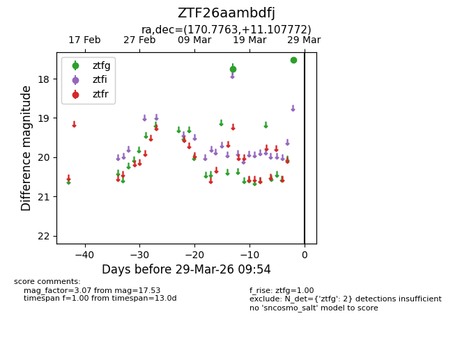
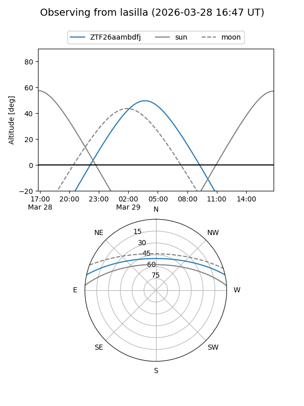
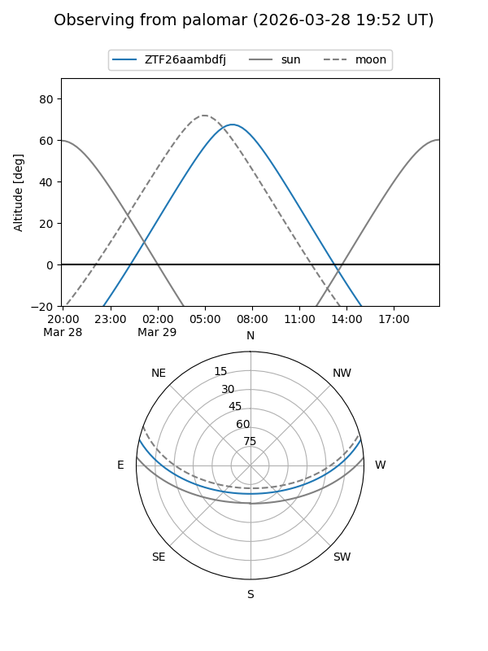

ZTF26aambdfj
Target ZTF26aambdfj at 2026-03-29 09:57
Aliases and brokers:
FINK: link
Lasair: link
ALeRCE: link
alt names
ZTF26aambdfj (ztf,fink_ztf)
Coordinates:
equatorial (ra, dec) = 170.7763,+11.10777
equatorial (HMS+DMS) = 11:23:06.32,+11:06:27.98
galactic (l, b) = (246.3217,+63.77895)
Flags:
Photometry:
last ztfg=17.53
2 ztfg detections
Lightcurve

Visibility


Additional plots